1.jacoco
官网：https://www.jacoco.org/jacoco/
2.arthas
定位和诊断运行的java项目代码
2.1 安装
卸载：直接删除2个文件夹：.arthas和logs
linux
1.在线安装
1
2
3
4
5
6
7
8# mkdir -p arthas
# cd arthas
curl -O https://alibaba.github.io/arthas/arthas-boot.jar
# 启动arthas(前首次执行即自动安装，后续启动直接复用)
# 前提：必须要有java进程在运行
java -jar arthas-boot.jar
# 默认安装目录 arthas home: /root/.arthas/lib/版本号/arthas
# 日志和缓存目录 arthas home: /root/logs1
2
3
4
5
6
7
8
9
10
11
12
13
14
15
16
17
18
19
20
21
22
23
24
25
26
27
28
29
30
31
32
33
34
35
36
37
38
39
40[root@master ~]# cd arthas/
[root@master arthas]# curl -O https://alibaba.github.io/arthas/arthas-boot.jar
Total % Received % Xferd Average Speed Time Time Time Current
Dload Upload Total Spent Left Speed
100 141k 100 141k 0 0 10987 0 0:00:13 0:00:13 --:--:-- 22609
[root@master arthas]# java -jar arthas-boot.jar
[INFO] JAVA_HOME: /usr/lib/jvm/java-1.8.0-openjdk-1.8.0.412.b08-1.el7_9.x86_64/jre
[INFO] arthas-boot version: 4.0.5
[INFO] Can not find java process. Try to run `jps` command lists the instrumented Java HotSpot VMs on the target system.
Please select an available pid.
[root@master arthas]# java -jar arthas-boot.jar
[INFO] JAVA_HOME: /usr/lib/jvm/java-1.8.0-openjdk-1.8.0.412.b08-1.el7_9.x86_64/jre
[INFO] arthas-boot version: 4.0.5
[INFO] Found existing java process, please choose one and input the serial number of the process, eg : 1. Then hit ENTER.
* [1]: 3375 xscjcx-0.0.1-SNAPSHOT.jar
1
[INFO] Start download arthas from remote server: https://arthas.aliyun.com/download/4.0.5?mirror=aliyun
[INFO] File size: 13.75 MB, downloaded size: 3.36 MB, downloading ...
[INFO] File size: 13.75 MB, downloaded size: 8.09 MB, downloading ...
[INFO] Download arthas success.
[INFO] arthas home: /root/.arthas/lib/4.0.5/arthas
[INFO] Try to attach process 3375
Picked up JAVA_TOOL_OPTIONS:
[INFO] Attach process 3375 success.
[INFO] arthas-client connect 127.0.0.1 3658
,---. ,------. ,--------.,--. ,--. ,---. ,---.
/ O \ | .--. ''--. .--'| '--' | / O \ ' .-'
| .-. || '--'.' | | | .--. || .-. |`. `-.
| | | || |\ \ | | | | | || | | |.-' |
`--' `--'`--' '--' `--' `--' `--'`--' `--'`-----'
wiki https://arthas.aliyun.com/doc
tutorials https://arthas.aliyun.com/doc/arthas-tutorials.html
version 4.0.5
main_class xscjcx-0.0.1-SNAPSHOT.jar
pid 3375
start_time 2025-07-13 00:59:33.582
currnt_time 2025-07-13 01:01:14.012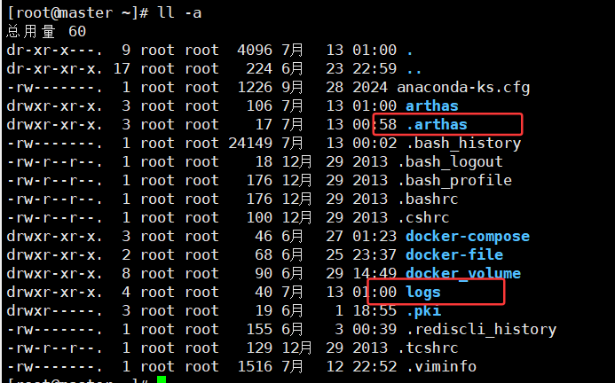
2.离线安装
1
2
3
4
5
6
7
8
9
10
11# 下载地址
https://arthas.aliyun.com/download/latest_version?mirror=aliyun
# 解压 -d /root/arthas 解压存放路径
unzip -d /root/arthas arthas-packaging-4.0.5-bin.zip
# 前提：必须要有java进程在运行
java -jar arthas-boot.jar
# 默认安装目录 arthas home: /root/.arthas/lib/版本号/arthas
# 日志和缓存目录 arthas home: /root/logs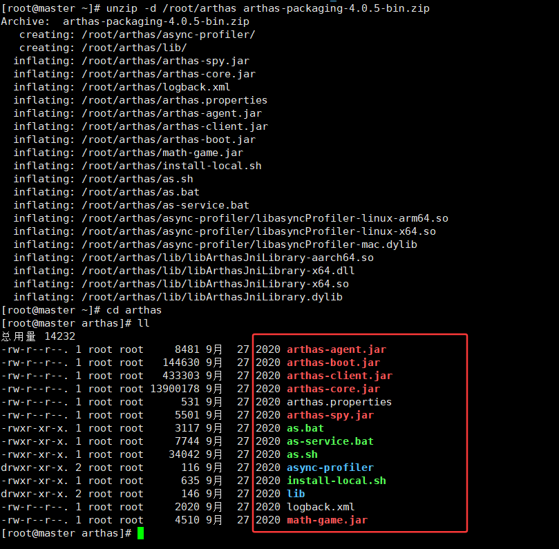
1
2
3
4
5
6
7
8
9
10
11
12
13
14
15
16
17
18
19
20
21
22
23
24
25
26
27
28
29[root@master arthas]# java -jar arthas-boot.jar
[INFO] JAVA_HOME: /usr/lib/jvm/java-1.8.0-openjdk-1.8.0.412.b08-1.el7_9.x86_64/jre
[INFO] arthas-boot version: 4.0.5
[INFO] Can not find java process. Try to run `jps` command lists the instrumented Java HotSpot VMs on the target system.
Please select an available pid.
[root@master arthas]# java -jar arthas-boot.jar
[INFO] JAVA_HOME: /usr/lib/jvm/java-1.8.0-openjdk-1.8.0.412.b08-1.el7_9.x86_64/jre
[INFO] arthas-boot version: 4.0.5
[INFO] Found existing java process, please choose one and input the serial number of the process, eg : 1. Then hit ENTER.
* [1]: 4374 xscjcx-0.0.1-SNAPSHOT.jar
1
[INFO] arthas home: /root/arthas
[INFO] Try to attach process 4374
Picked up JAVA_TOOL_OPTIONS:
[INFO] Attach process 4374 success.
[INFO] arthas-client connect 127.0.0.1 3658
,---. ,------. ,--------.,--. ,--. ,---. ,---.
/ O \ | .--. ''--. .--'| '--' | / O \ ' .-'
| .-. || '--'.' | | | .--. || .-. |`. `-.
| | | || |\ \ | | | | | || | | |.-' |
`--' `--'`--' '--' `--' `--' `--'`--' `--'`-----'
wiki https://arthas.aliyun.com/doc
tutorials https://arthas.aliyun.com/doc/arthas-tutorials.html
version 4.0.5
main_class xscjcx-0.0.1-SNAPSHOT.jar
pid 4374
start_time 2025-07-13 02:00:20.771
currnt_time 2025-07-13 02:01:26.703
WIndows
1.在线安装
1
2
3
4
5
6
7# 下载arthas-boot.jar
curl -O https://alibaba.github.io/arthas/arthas-boot.jar
# 启动arthas(前首次执行即自动安装，后续启动直接复用)
# 前提：必须要有java进程在运行
java -jar arthas-boot.jar
# 默认安装目录arthas home: C:\Users\用户目录\.arthas\lib\版本号\arthas
# 日志和缓存目录 C:\Users\用户目录\logs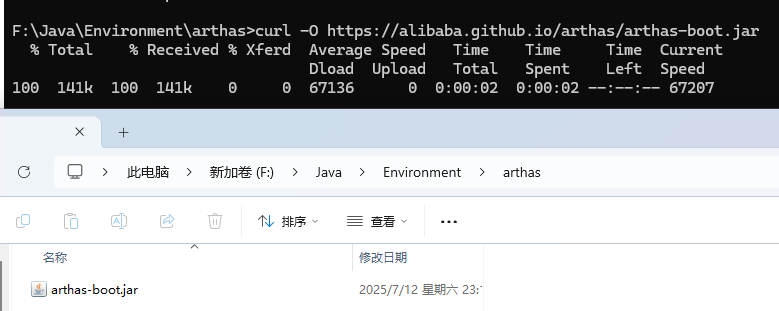
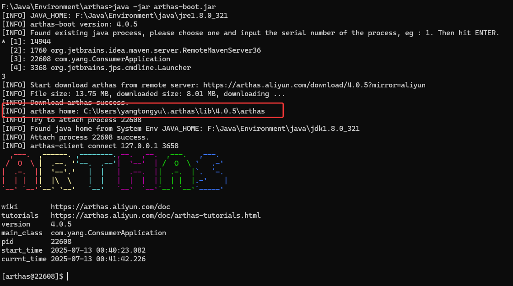
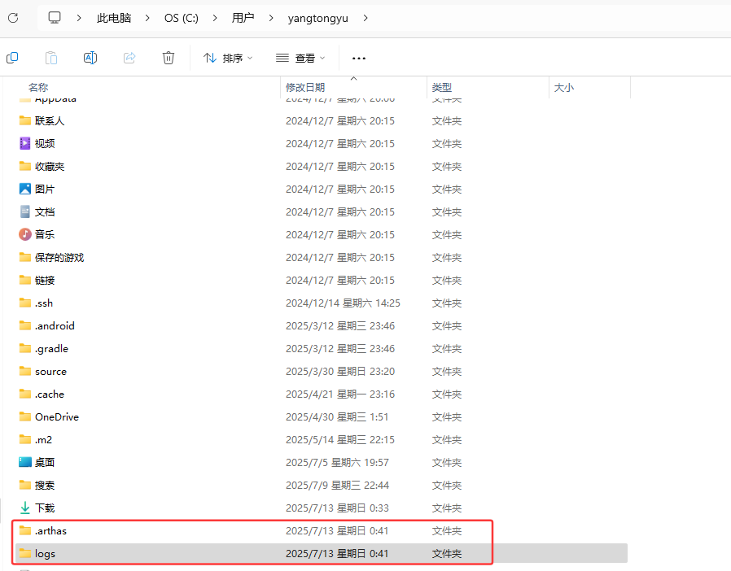
2.离线安装
同linux一样
2.2 常用命令
2.2.1 trace
trace命令用于追踪方法内部调用路径，并输出方法路径上每个节点的耗时情况
1 | trace class-pattern method-pattern |
| 参数 | 说明 |
|---|---|
class-pattern |
类名匹配表达式（支持通配符*） |
method-pattern |
方法名匹配表达式 |
condition-express |
条件过滤表达式（OGNL） |
-E |
开启正则表达式匹配 |
-n <count> |
限制执行次数（默认100） |
#cost |
方法执行耗时（毫秒） |
-m <num> |
限制匹配类数量（默认50） |
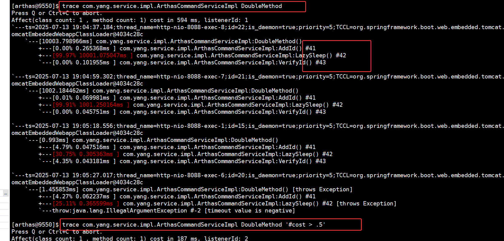
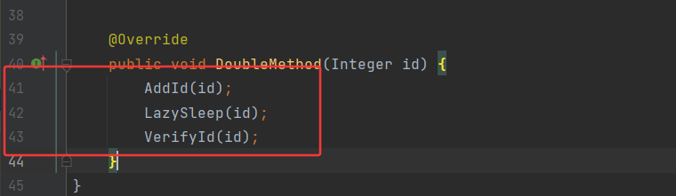
2.2.2 watch
- watch命令用于动态监控Java方法的执行情况，可以实时观测方法的入参、返回值、异常以及执行耗时等关键信息
- 它支持通过OGNL表达式筛选数据
- params：方法参数数组，可通过
params访问第一个参数 - returnObj：方法返回值（仅
s/f事件点可用） - throwExp：异常对象（仅
e/f事件点可用） - target：当前对象实例（this）
- **#cost**：方法执行耗时（毫秒）
- …
- params：方法参数数组，可通过
1 | watch class-pattern method-pattern "{params,target,returnobj}" -x 2 |
| 参数 | 说明 |
|---|---|
class-pattern |
类名匹配表达式（支持通配符*） |
method-pattern |
方法名匹配表达式 |
express |
观察表达式（默认{params, target, returnObj}） |
condition-express |
条件过滤表达式 |
-b |
在方法调用前观察（仅能获取入参） |
-e |
在方法抛出异常后观察 |
-s |
在方法正常返回后观察 |
-f |
默认选项，在方法结束后观察（包括正常和异常） |
-x <n> |
指定输出结果的属性遍历深度（1-4） |
n <count> |
限制观察次数 |
-E |
开启正则表达式匹配 |
--exclude-class-pattern |
排除特定类 |
-m <num> |
限制匹配的类数量（默认50） |
-v |
显示详细信息 |
#cost |
内置变量，表示方法执行耗时（毫秒） |
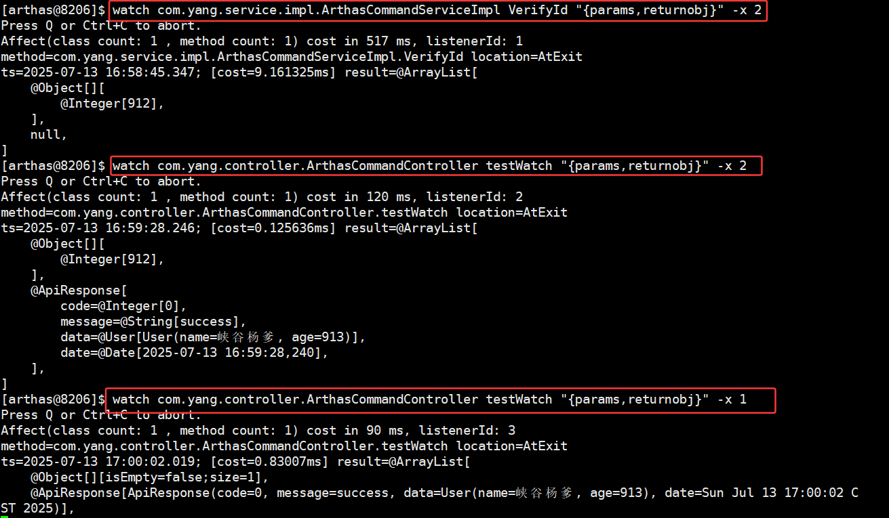
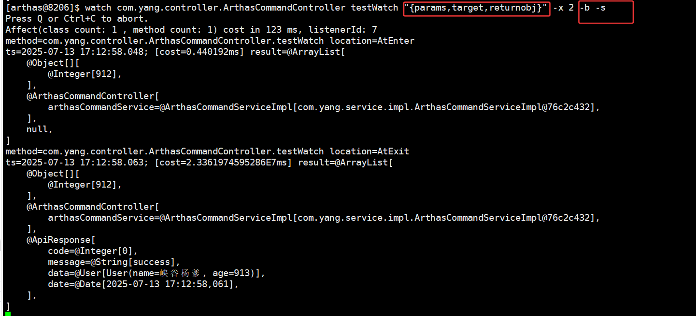

2.2.3 monitor
用来监视一个时间段中指定方法的执行次数，成功次数，失败次数，耗时等信息
1 | monitor [参数] class-pattern method-pattern [condition-express] |
| 参数缩写 | 完整参数 | 类型 | 默认值 | 说明 |
|---|---|---|---|---|
-b |
--before |
开关 | false | 前置条件检查：在方法执行前计算条件表达式（默认在方法返回后计算） |
-c |
--cycle |
数值 | 60 | 监控周期：统计结果输出间隔（秒），建议生产环境≥10秒 |
--exclude-class-pattern |
字符串 | 无 | 排除类：使用 . 或 / 分隔的排除类名模式 |
|
-n |
--limits |
数值 | 无 | 调用阈值：仅统计执行次数超过该值的方法 |
-m |
--maxMatch |
数值 | 50 | 类匹配上限：防止匹配过多类导致性能问题 |
-E |
--regex |
开关 | false | 正则模式：启用后 class-pattern 使用正则表达式匹配 |
-v |
--verbose |
开关 | false | 详细日志：打印匹配的类/方法等调试信息 |
| 监控项 | 说明 |
|---|---|
| timestamp | 时间戳 |
| class | 类 |
| method | 方法（构造方法、普通方法） |
| total | 调用次数 |
| success | 成功次数 |
| fail | 失败次数 |
| rt | 平均耗时 |
| fail-rate | 失败率 |
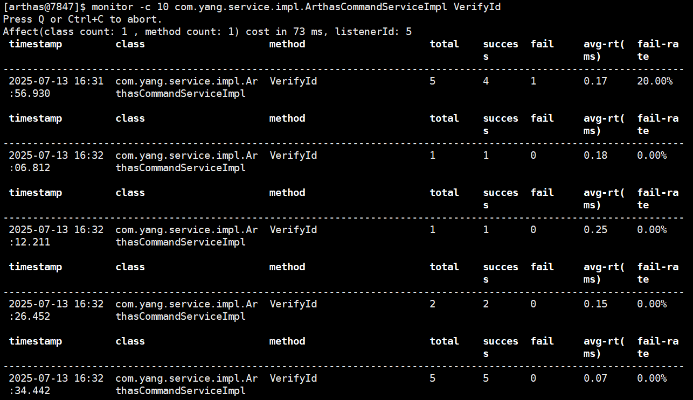
2.2.4 stack
输出指定方法的调用路径
1 | stack class-pattern method-pattern [参数] |
| 参数名称 | 参数说明 | 默认值 | 示例 |
|---|---|---|---|
class-pattern |
类名匹配表达式 | 无 | demo.MathGame |
method-pattern |
方法名匹配表达式 | 无 | primeFactors |
condition-express |
OGNL条件表达式 | 无 | params[0]<0 |
-E |
开启正则表达式匹配 | 通配符匹配 | -E |
-n |
执行次数限制 | 无限制 | -n 5 |
m <arg> |
Class最大匹配数量 | 50 | -m 100 |
--exclude-class-pattern |
排除特定类 | 无 | --exclude-class-pattern *Test* |
#cost |
内置变量，表示方法执行耗时（毫秒） |
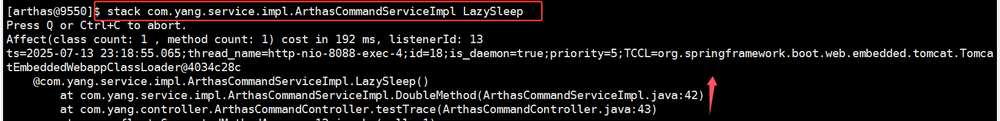
2.2.5 thread
2.2.6 tt
提供的”时间隧道”功能，能够记录指定方法的每次调用情况，包括入参、返回值和异常信息
1 | stack [参数] [class-pattern] [method-pattern] |
| 参数名称 | 参数说明 | 默认值 | 示例 |
|---|---|---|---|
| -t | 记录目标方法的调用 | 无 | tt -t com.example.Test print |
| -n | 限制记录次数 | 无限制 | -n 5 |
| -m | Class最大匹配数量 | 50 | -m 100 |
| -l | 列出所有记录 | 无 | tt -l |
| -i | 查看指定索引的详情 | 无 | tt -i 1000 |
| -p | 回放指定索引的调用 | 无 | tt -p 1000 |
| -w | 条件表达式搜索 | 无 | tt -w 'params[0]==null' |
| -d | 删除指定记录 | 无 | tt -d 1000 |
| –exclude-class-pattern | 排除特定类 | 无 | --exclude-class-pattern *Test* |
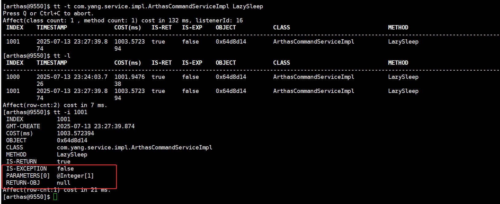
2.3 其它命令
1 | NAME DESCRIPTION |
2.3.1 options
用于查看和修改Arthas的全局配置选项
| 参数名称 | 默认值 | 描述 |
|---|---|---|
| unsafe | false | 是否允许增强系统类 |
| json-format | false | 是否以JSON格式输出 |
| verbose | false | 是否显示详细输出 |
| disable-sub-class | false | 是否禁用子类匹配 |
| save-result | false | 是否保存命令结果到日志 |
| sample-interval | 100 | 采样间隔时间(ms) |
| batch-re-transform | true | 是否批量retransform类 |
| job-timeout | 86400 | 异步任务超时时间(秒) |
| dump | false | 是否dump增强的类 |
| support-redefine | true | 是否支持redefine功能 |
| debug-for-asm | false | 是否输出ASM调试信息 |
| silent | false | 是否静默输出 |
| height | 45 | 终端显示高度 |
| width | 80 | 终端显示宽度 |
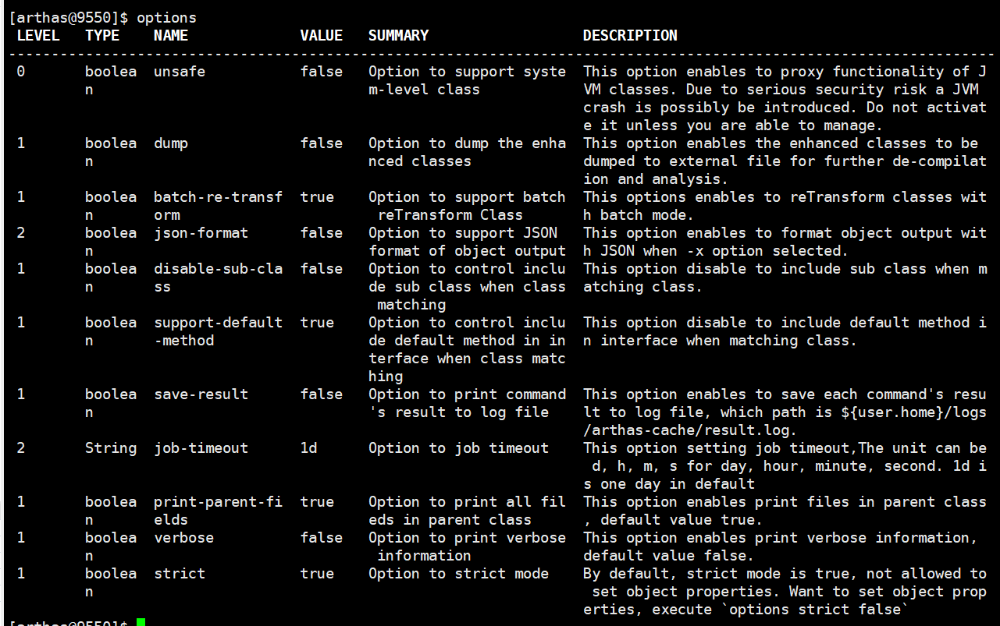